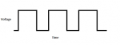
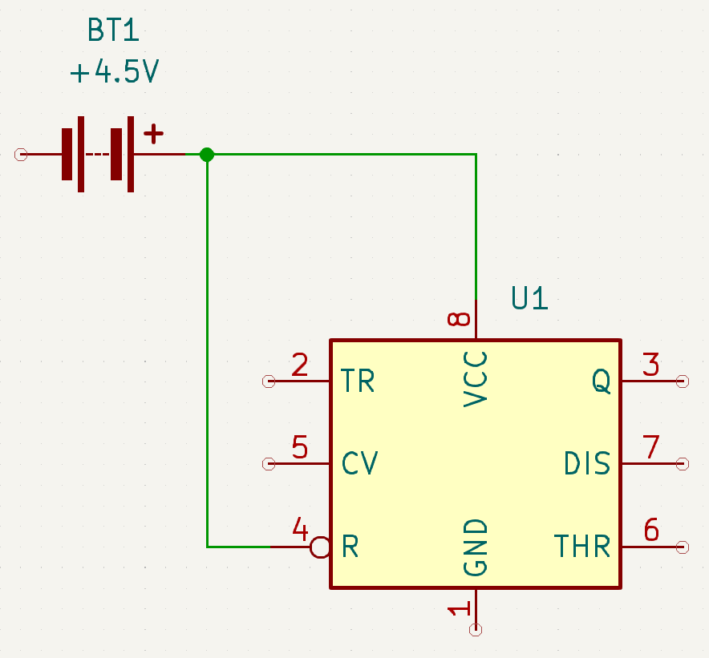

Badge Level 3
Badge level 3 consists of a power supply (batteries and a battery pack) (BT1), resistors (R#), capacitor (C1), 555 Timer IC (U1), and a LED (D1).
Instead of transistors like we used in badge level 2 we will be using the 555 Timer IC (U1) in what is called an astable mode. Astable means that the 555 Timer IC (U1) will oscillate or fluctuate between off and on. This oscillation will be what causes the LED to blink.
The oscillation that we will be using is called a square wave:

When working with square waves, we need to look at a couple of time measurements. The first is how long is the square wave at its peak, and the second is how long is teh square wave at its valley.
The square wave peak will determine how long the LED is on for, and the square wave valley will determine how long the LED is off for. Basically it will tell us what the blinking rate of the LED is.
We will start off with an example using the 555 Timer IC (U1) formula that we defined in the formula's section.
As an example let's use a 8412 ohm resistor (R1), a 369 ohm resistor (R2), and a 707 μF capacitor (C1). To calculate the square wave and therefore the blink rate, we will start with the Time High:
Thigh = 0.7 * (R1 + R2) * C1
Thigh = 0.7 * (8412 + 369) * 0.000707
Thigh = 0.7 * 8781 * 0.000707
Thigh = 6146.7 * 0.000707
Thigh = 4.3457169
Then to calculate the square wave Time Low we would:
Tlow = 0.7 * R2 * C1
Tlow = 0.7 * 369 * 0.000707
Tlow = 258.3 * 0.000707
Tlow = 0.1826181
So in this example the LED (D1) will turn on for ~ 4 seconds, and then it will turn off for ~0.2 seconds. Basically the LED (D1) will stay on for a long time and then it will blink off quickly and turn back on.
Now that we know how to calculate what the blink rate is using a square wave, we can start to design our circuit using the 555 Timer IC (U1). But first we need to learn a little about the 555 Timer IC (U1).
The 555 Timer IC (U1) has a total of 8 pins:
-
Ground (GND)
The ground pin (1) is used as ground for power to flow towards. As we apply voltage it will flow towards the ground pin.
-
Trigger (TR)
The trigger pin (2) is used to determine when the output pin needs to be turned on. This is triggered (hehehe) by reaching a threshold of less than 1/3 of the supplied voltage.
-
Output (Q)
The output pin (3) is where the power goes if the trigger pin is activated. So the output pin is either low, which means that it isn't supplying voltage (or very low voltage), or it is high, which means that it is outputting close to the voltage supplied.
-
Reset (R)
The reset pin (4) is like the old reset button on your Nintendo (yes I am that old). When pressed it will reset the state of the IC until the trigger is triggered. To activate the reset pin, we attach it to the ground.
-
Control (CV)
The control pin (5) is used to try and level out fluctuations in the voltage supplied. Usually this is just connected to the ground or the negative on the power supply.
-
Threshold (THR)
The threshold pin (6) is used to determine when the output pin needs to be turned off. This is triggered by reaching a threshold (hehehe) of more than 2/3 of the supplied voltage.
-
Discharge (DIS)
The discharge pin (7) will act as a ground or negative to discharge whatever is in the IC while it is on.
-
Vcc (VCC)
The Vcc pin (8) is connected to the positive end of the power supply. The power supply needs to supply a minimum of 4.5 volts.
So now that we know a little bit about how the 555 Timer IC (U1) works, we can really start to design our circuit.
We know that we need to have power (red) go to Vcc (Pin 8), but we also want power (BT1) to go to Reset (Pin 4) as well. The reason that we are supplying power to Reset is that we don't want Reset to go to the ground and reset our IC (U1).

We also know that we need to have Ground (Pin 1) connect to negative (black) (BT1).
 that connects in parallel to a 555 timer IC (U1) on pin 8 (VCC) and pin 4 (R). The 555 timer IC (U1) pin 1 (GND) connects to negative of the 4.5V battery (BT1).")
We know that Output is where the power will output itself, so that is where we need to connect the anode of the LED (D1). But remember, a LED needs a resistor inline so that it doesn't pop. So please use Ohm's Law to determine the resistor (R3) value to place before the anode. We will also need to connect the cathode of the LED (D1) to the negative (black) (BT1).
 that connects in parallel to a 555 timer IC (U1) on pin 8 (VCC) and pin 4 (R). The 555 timer IC (U1) pin 3 (Q) connects to a resistor (R3) which connects to the annode of a LED (D1) whose cathode connects to the 555 timer IC (U1) pin 1 (GND) which connects to negative of the 4.5V battery (BT1).")
This is where the circuit gets a little bit tricky, as we need to connect the Discharge (Pin 7), the Threshold (Pin 6), and the Trigger (Pin 2). We will also need to add in a couple of resistors (R1, R2) and a capacitor (C1).
We know that when the IC (U1) is off, meaning that the Threshold (Pin 6) has more than 2/3 voltage, that the Discharge (Pin 7) is on. We will use the Discharge (Pin 7) to charge the capacitor (C1).
So to begin with, we need to connect the Discharge (Pin 7) to a resistor (R1). We also need to make sure that we have a complete circuit so we will attach the resistor (R1) to power (red).
 that connects in parallel to a 555 timer IC (U1) on pin 8 (VCC), pin 4 (R), and a resistor (R1) that connects to the 555 timer IC (U1) pin 7 (DIS). The 555 timer IC (U1) pin 3 (Q) connects to a resistor (R3) which connects to the annode of a LED (D1) whose cathode connects to the 555 timer IC (U1) pin 1 (GND) which connects to negative of the 4.5V battery (BT1).")
Since the Discharge (Pin 7) will be used to charge the capacitor (C1), we need to add a resistor (R2) between Discharge (Pin 7) and the capacitor (C1). This resistor (R2) will slow the charge of the capacitor (C1) and therefore determine the vallue (low) of the square wave (how long the LED is off for).
![A screenshot of a circuit diagram that has the positive of a 4.5V battery (BT1) that connects in parallel to a 555 timer IC (U1) on pin 8 (VCC), pin 4 (R), and a resistor (R1) that connects to the 555 timer IC (U1) pin 7 (DIS) and a resistor (R2) which connects to the positive of a capacitor (C1). The 555 timer IC (U1) pin 3 (Q) connects to a resistor (R3) which connects to the annode of a LED (D1) whose cathode connects to the 555 timer IC (U1) pin 1 (GND) and the negative of a capacitor (C1) which connects to negative of the 4.5V battery (BT1).](pictures/badge3_part5.png "A screenshot of a circuit diagram that has the positive of a 4.5V battery (BT1) that connects in parallel to a 555 timer IC (U1) on pin 8 (VCC), pin 4 (R), and a resistor (R1) that connects to the 555 timer IC (U1) pin 7 (DIS) and a resistor (R2) which connects to the positive of a capacitor (C1). The 555 timer IC (U1) pin 3 (Q) connects to a resistor (R3) which connects to the annode of a LED (D1) whose cathode connects to the 555 timer IC (U1) pin 1 (GND) and the negative of a capacitor (C1) which connects to negative of the 4.5V battery (BT1).")
Lets go a little more in depth into this. So when we turn on the power supply (BT1), the capacitor (C1) will be discharged, meaning it is like a dead battery. Also since we just applied power, we know that the Trigger (Pin 2) will be at less than 1/3 supplied voltage, so the IC (U1) will turn on and the LED (D1) will turn on. The Discharge (Pin 7) will also turn on, and begin to charge the capacitor (C1) through the resistors (R1, R2). Once the capacitor (C1) goes over the 2/3 supplied voltage required for the Threshold (Pin 6) then the IC (U1) will turn off, turning off the LED (D1) and Discharge (Pin 7) of the IC (U1). The IC (U1) will stay off until the capacitor (C1) is disharged. Once the capacitor (C1) goes below the 1/3 supplied voltage for the Trigger (Pin 2) then the IC (U1) will turn on, which will turn on the LED (D1) and the Discharge (Pin 7). This process will continue to repeate itself turning the LED (D1) on and off based on the values of the capacitor (C1) and the resistors (R1, R2).
So now, we just need to connect the Trigger (Pin 2) and the Threshold (Pin 6) to the capacitor (C1) and our circuit should be complete.
![A screenshot of a circuit diagram that has the positive of a 4.5V battery (BT1) that connects in parallel to a 555 timer IC (U1) on pin 8 (VCC), pin 4 (R), and a resistor (R1) that connects to the 555 timer IC (U1) pin 7 (DIS) and a resistor (R2) which connects to the 555 timer IC (U1) pin 6 (THR) which connects to both the 555 timer IC (U1) pin 2 (TR) and the positive of a capacitor (C1). The 555 timer IC (U1) pin 3 (Q) connects to a resistor (R3) which connects to the annode of a LED (D1) whose cathode connects to the 555 timer IC (U1) pin 1 (GND) and the negative of a capacitor (C1) which connects to negative of the 4.5V battery (BT1).](pictures/badge3_full.png "A screenshot of a circuit diagram that has the positive of a 4.5V battery (BT1) that connects in parallel to a 555 timer IC (U1) on pin 8 (VCC), pin 4 (R), and a resistor (R1) that connects to the 555 timer IC (U1) pin 7 (DIS) and a resistor (R2) which connects to the 555 timer IC (U1) pin 6 (THR) which connects to both the 555 timer IC (U1) pin 2 (TR) and the positive of a capacitor (C1). The 555 timer IC (U1) pin 3 (Q) connects to a resistor (R3) which connects to the annode of a LED (D1) whose cathode connects to the 555 timer IC (U1) pin 1 (GND) and the negative of a capacitor (C1) which connects to negative of the 4.5V battery (BT1).")
Since we have such a complicated circuit, lets recap how it works:
When the Trigger (Pin 2) is less than 1/3 supplied voltage, then the IC (U1) will pass power through the Output (Pin 3) which will power the LED (D1) turning the LED (D1) on. It will also pass power through the Discharge (Pin 7).
The Discharge (Pin 7) is connected to the capacitor (C1) through a series of resistors (R1, R2), so when the IC (U1) is on, it will start to charge the capacitor (C1). Once the capacitor (C1) reaches 2/3 of supplied voltage, then it will activate the Threshold (Pin 6). When Threshold (Pin 6) is activated, then the IC (U1) will turn off, and the LED (D1) will turn off. While the IC (U1) is off, the Discharge (Pin 7) will also be off.
When the capacitor (C1) drops below 1/3 supplied voltage, then the Trigger (Pin 2) will activate and turn the IC (U1) back on.
This process will repeat itself for as long as there is power supplied to the circuit, causing the LED (D1) to blink according to the values calculated for the square wave.
Congratulations, you, in theory have a working Darknet 11 level 3 badge.

 connecting in serial to a 120 Ω resistor (R1) that connects to the anode of an LED (D1) whose cathode then connects back to the negative of the 4.5V battery (BT1).")
![A screenshot of a circuit diagram that has the positive of a 4.5V battery (BT1) connecting in serial to a 120 Ω resistor (R1) that connects to the anode of an LED (D1) whose cathode then connects back to the negative of the 4.5V battery (BT1). The postive of the 4.5V battery (BT1) also has a parallel connection to a 15 Ω resistor (R2) that connects in serial to the anode of an LED (D2) whose cathode connects to the anode of another LED (D3) whose cathode connects back to the negative of the 4.5V battery (BT1).](pictures/badge1_full.png "A screenshot of a circuit diagram that has the positive of a 4.5V battery (BT1) connecting in serial to a 120 Ω resistor (R1) that connects to the anode of an LED (D1) whose cathode then connects back to the negative of the 4.5V battery (BT1). The postive of the 4.5V battery (BT1) also has a parallel connection to a 15 Ω resistor (R2) that connects in serial to the anode of an LED (D2) whose cathode connects to the anode of another LED (D3) whose cathode connects back to the negative of the 4.5V battery (BT1).")

 connecting in serial to the anode of a LED (D1) whose cathode connects to the collector of a transistor (Q1A) whose emitter connects back to the negative of the 4.5V battery (BT1).")
 connecting in serial to the anode of a LED (D1) whose cathode connects to the collector of a transistor (Q1A) whose emitter connects back to the negative of the 4.5V battery (BT1). The base of the transitor (Q1A) connects to the negative of a capacitor (C2).")
![A screenshot of a circuit diagram that has the positive of a 4.5V battery (BT1) that connects in parallel to the negative of a capacitor (C1), the base of a transitor (Q2A), the anode of a LED (D1), the anode of a LED (D2), the negative of capacitor (C2), and the base of transitor (Q1A). The positive of capacitor (C1) and the cathode of LED (D1) connects to the collector of (Q1A). The positive of capacitor (C2) and the cathode of LED (D2) connects to the collector of (Q2A). The emitter of both transistors (Q1A, Q2A) connect to the negative of the 4.5V battery (BT1).](pictures/badge2_part3.png "A screenshot of a circuit diagram that has the positive of a 4.5V battery (BT1) that connects in parallel to the negative of a capacitor (C1), the base of a transitor (Q2A), the anode of a LED (D1), the anode of a LED (D2), the negative of capacitor (C2), and the base of transitor (Q1A). The positive of capacitor (C1) and the cathode of LED (D1) connects to the collector of (Q1A). The positive of capacitor (C2) and the cathode of LED (D2) connects to the collector of (Q2A). The emitter of both transistors (Q1A, Q2A) connect to the negative of the 4.5V battery (BT1).")
![A screenshot of a circuit diagram that has the positive of a 4.5V battery (BT1) that connects in parallel to a 1357 Ω resistor (R1) that connects to the negative of a capacitor (C1), the base of a transitor (Q2A). A 1357 Ω resistor (R2) to the anode of a LED (D1). A 1357 Ω resistor to the anode of a LED (D2). A 1357 Ω resistor to the negative of capacitor (C2), and the base of transitor (Q1A). The positive of capacitor (C1) and the cathode of LED (D1) connects to the collector of (Q1A). The positive of capacitor (C2) and the cathode of LED (D2) connects to the collector of (Q2A). The emitter of both transistors (Q1A, Q2A) connect to the negative of the 4.5V battery (BT1).](pictures/badge2_full.png "A screenshot of a circuit diagram that has the positive of a 4.5V battery (BT1) that connects in parallel to a 1357 Ω resistor (R1) that connects to the negative of a capacitor (C1), the base of a transitor (Q2A). A 1357 Ω resistor (R2) to the anode of a LED (D1). A 1357 Ω resistor to the anode of a LED (D2). A 1357 Ω resistor to the negative of capacitor (C2), and the base of transitor (Q1A). The positive of capacitor (C1) and the cathode of LED (D1) connects to the collector of (Q1A). The positive of capacitor (C2) and the cathode of LED (D2) connects to the collector of (Q2A). The emitter of both transistors (Q1A, Q2A) connect to the negative of the 4.5V battery (BT1).")